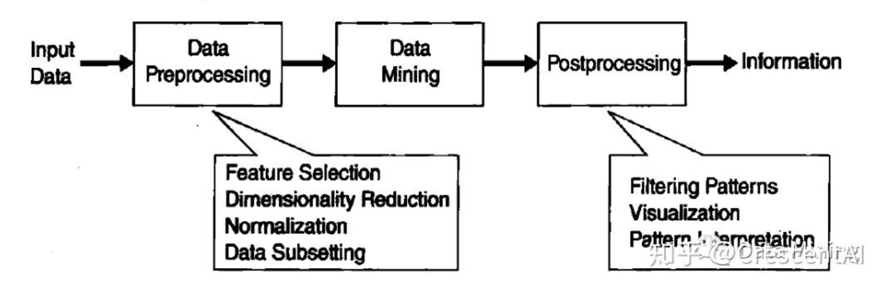

Core Concepts of Data Mining
📊 What is Data Mining?
Data Mining is the process of extracting hidden, previously unknown, but potentially useful information from large datasets. Its goal is to build decision models that predict future behavior based on historical data. For example, analyzing customer purchase patterns to predict potential customer groups. In today's data-driven business environment, data mining has become a key technology for gaining competitive advantage.
🚀 Origins and Development
Data Mining integrates multidisciplinary technologies:
- 📈 Statistics: Sampling and hypothesis testing methods
- 🤖 Artificial Intelligence: Machine learning algorithms
- 🗄️ Database Systems: Efficient data management
- 🎨 Visualization Techniques: Result presentation methods
With the advent of the big data era, distributed computing and parallel processing technologies have significantly enhanced the ability to process massive datasets.
🔍 KDD Process
The seven key steps of Knowledge Discovery in Databases (KDD):
- Data Cleaning: Handling missing values and noisy data
- Data Integration: Combining data from multiple sources
- Data Selection: Extracting relevant data subsets
- Data Transformation: Normalizing data formats
- Data Mining: Applying algorithms to extract patterns
- Pattern Evaluation: Assessing the validity of results
- Knowledge Representation: Visualizing the findings